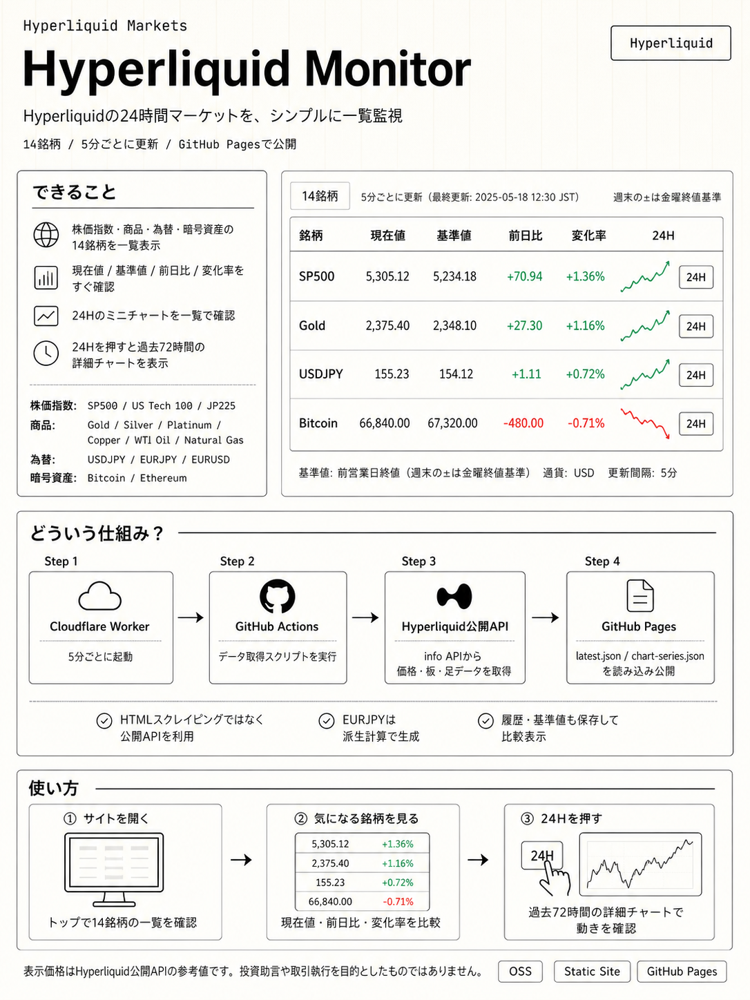

これは何か
分散型取引所（DEX）である Hyperliquid の L1 ネットワークから市場データを取得し、履歴データとして蓄積・表示するためのオープンソース・モニタリングツールです。サーバーレスな構成（Cloudflare Workers + GitHub Actions）で、低コストかつ自律的に動作するように設計されています。
何ができるか
全銘柄の 5 分足（OHLCV）データ、ファンディングレート、オープンインタレストなどのマーケット統計を定期的に取得し、リポジトリ内の JSON ファイルとして保存します。保存されたデータは GitHub Pages を通じてウェブブラウザから閲覧可能で、トレーダーが過去の価格推移や資金調達率の傾向を分析するための基盤となります。
目立つポイント
API キーやウォレットの秘密鍵を一切必要とせず、パブリック API のみで動作する安全な設計が特徴です。また、Cloudflare Worker による軽量なスケジューリングと、GitHub Actions によるデータ永続化を組み合わせた「サーバーレス・データレイク」としての構成は、個人開発者にとって非常にメンテナンス性が高いモデルです。
セットアップや使い方の流れ
リポジトリをフォークし、Cloudflare Worker に `worker.mjs` をデプロイします。GitHub Actions の書き込み権限を持つトークンを Worker の Secret に設定し、5 分ごとの Cron 実行を設定します。あとは GitHub Actions を手動で一度実行して初期データを作成すれば、自動的にデータの蓄積とウェブサイトの更新が開始されます。
どんな人向けか
Hyperliquid での取引を最適化したいアルゴトレーダーや、DEX の市場動向を独自の UI で監視したい開発者。特定の銘柄のファンディングレートの推移を詳細に追いかけたい、あるいはサーバー維持費をかけずにデータ収集基盤を構築したいユーザーに最適です。
注意点
Hyperliquid API のレート制限に配慮し、標準では 5 分ごとの更新が推奨されています。また、データの蓄積が進むとリポジトリのサイズが増大するため、長期間の運用においては履歴データのアーカイブや整理を適宜検討する必要があります。
まとめ
Hyperliquid-monitor は、DEX トレーディングにおける「情報の非対称性」を解消するための強力な武器となります。サーバー管理の手間を省きつつ、自分だけの市場データバンクを構築できるこのツールは、次世代の DeFi トレード環境を支える実用的な一歩と言えるでしょう。
参考画像
